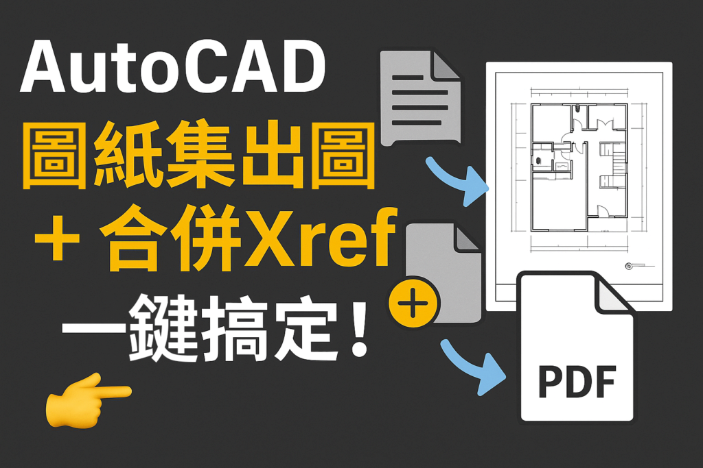

🎯 AutoCAD 工程人必學技巧！
圖紙集出圖、Xref 合併，一鍵完成不再手忙腳亂！

📂 你還在一張一張慢慢列印嗎？
📌 或是交圖時忘記附上外部參考檔？
這支線上課程教學一次教你搞定👇
✅ 圖紙集集中管理所有圖面
✅ 合併外部參考成單一 DWG，交圖不出錯！
✅ 一鍵整理所有檔案(DWG&PDF)
馬上學會提升效率的關鍵步驟 👉【立即觀看】
#AutoCAD #出圖技巧 #圖紙集 #Xref #工程繪圖 #建築製圖 #CAD教學 #工作效率提升
👇一步一步學會圖紙集出圖與合併外部參考
🎥 圖紙集出圖及合併外部參考_課前說明
👇[訂購]圖紙集出圖及合併外部參考 - 線上課程
https://www.autocad-tw.com/t30217-topic
※有分享 AI寫程式 程式碼網址*